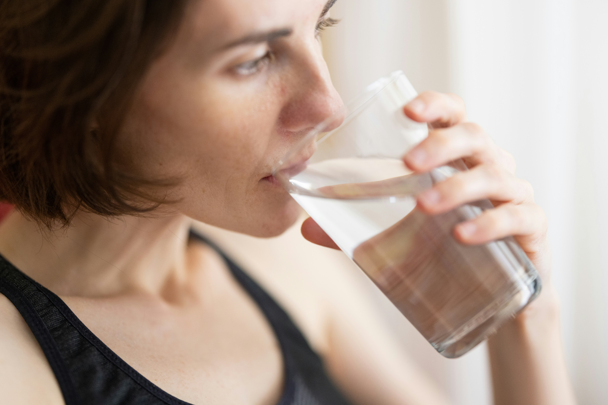

The benefits of drinking enough waterရေလုံလောက်စွာသောက်ခြင်းမှ ရရှိသော အကျိုးကျေးဇူးများ

Written by Dr. May Thida
ရေးသားသူ — Dr. May Thida
As a specialist in nutrition and public health, I wrote this article so that more people understand how much drinking water matters.
အာဟာရနှင့် ပြည်သူ့ကျန်းမာရေးဆိုင်ရာ အထူးကုဆရာဝန်တစ်ဦးအနေဖြင့် ရေသောက်သုံးခြင်း၏ အရေးပါပုံကို လူအများသိရှိစေရန် ဤဆောင်းပါးကို ရေးသားထားပါသည်။
About 60% of the human body is water, and every cell depends on it to do its work. Drinking enough not only regulates the body's internal processes but also helps prevent a range of illnesses. Most people only drink once they feel thirsty — yet the signs of dehydration begin well before thirst sets in.
လူ့ခန္ဓာကိုယ်၏ ၆၀% ခန့်သည် ရေဖြင့်ဖွဲ့စည်းထားပြီး ဆဲလ်တိုင်း၏ လုပ်ငန်းဆောင်တာများအတွက် ရေဓာတ်သည် မရှိမဖြစ် လိုအပ်ပါသည်။ ရေကို လုံလောက်စွာ သောက်သုံးခြင်းသည် ခန္ဓာကိုယ်အတွင်းဇီဝဖြစ်စဉ်များကို ထိန်းညှိပေးရုံသာမက ရောဂါများစွာကိုလည်း ကာကွယ်ပေးနိုင်ပါသည်။ လူအများစုသည် ရေဆာငတ်မှသာ ရေသောက်လေ့ရှိကြသော်လည်း ရေဓာတ်ခမ်းခြောက်ခြင်း၏ လက္ခဏာများသည် ဆာငတ်ခြင်းမတိုင်မီကတည်းက စတင်ဖြစ်ပေါ်နေတတ်ပါသည်။
The main benefits of drinking water
ရေသောက်ခြင်း၏ အဓိကအကျိုးကျေးဇူးများ

Protects the kidneys
ကျောက်ကပ်ကျန်းမာရေးကို ကာကွယ်ပေးခြင်း
Drinking plenty of water dilutes the urine and markedly lowers the risk of kidney stones and urinary tract infections.
ရေများများသောက်ခြင်းက ဆီးကို ပျော်ဝင်စေပြီး ကျောက်ကပ်ကျောက်တည်ခြင်းနှင့် ဆီးလမ်းကြောင်းပိုးဝင်ခြင်းတို့ကို သိသိသာသာ လျှော့ချပေးနိုင်ပါသည်။

Boosts energy and brain function
စွမ်းအင်နှင့် ဦးနှောက်လုပ်ဆောင်ချက် မြှင့်တင်ပေးခြင်း
When you are well hydrated, concentration, memory and mental performance all improve, and fatigue eases.
ရေဓာတ်ပြည့်ဝနေပါက အာရုံစူးစိုက်နိုင်စွမ်း၊ မှတ်ဉာဏ်နှင့် စိတ်ပိုင်းဆိုင်ရာ စွမ်းဆောင်ရည်များ ပိုမိုကောင်းမွန်လာပြီး ပင်ပန်းနွမ်းနယ်မှုကိုလည်း လျော့ကျစေပါသည်။

Keeps skin healthy
အရေပြားနှင့် အသားအရေ ကျန်းမာစေခြင်း
Water flushes waste from the skin, keeps it supple and slows the signs of ageing.
ရေသောက်ခြင်းက အရေပြားတွင်းရှိ အဆိပ်အတောက်များကို ဖယ်ရှားပေးပြီး အသားအရေကို စိုပြေတောက်ပစေကာ အိုမင်းရင့်ရော်မှုကို နှေးကွေးစေပါသည်။
Supports digestion
အစာခြေစနစ်ကို ထောက်ကူပေးခြင်း
Water is essential to producing digestive juices; it prevents constipation and keeps the bowel moving smoothly.
ရေသည် အစာခြေရည်များ ထုတ်လုပ်ရာတွင် အရေးပါပြီး ဝမ်းချုပ်ခြင်းကို ကာကွယ်ပေးကာ အူလမ်းကြောင်းကို ချောမွေ့စေပါသည်။

Helps with weight management
ကိုယ်အလေးချိန် ထိန်းညှိရာတွင် အထောက်အကူပြုခြင်း
A glass before a meal curbs appetite and slightly lifts the metabolic rate, which helps keep weight in check.
အစာမစားမီ ရေသောက်ခြင်းက အစာစားချင်စိတ်ကို လျှော့ချပေးပြီး ဇီဝကမ္မဖြစ်စဉ်ကို အနည်းငယ်မြှင့်တင်ပေးခြင်းဖြင့် ကိုယ်အလေးချိန်ထိန်းရန် အထောက်အကူပြုပါသည်။

Eases headaches
ခေါင်းကိုက်ခြင်းကို သက်သာစေခြင်း
Dehydration is a common trigger for headaches, and drinking water can reduce the pain.
ရေဓာတ်ခမ်းခြောက်ခြင်းသည် ခေါင်းကိုက်ခြင်း၏ အဖြစ်များသော အကြောင်းရင်းတစ်ခုဖြစ်ပြီး ရေသောက်ခြင်းက ဝေဒနာကို လျှော့ချပေးနိုင်ပါသည်။
How much to drink in a day
တစ်နေ့တာ ရေသောက်သင့်သော ပမာဏ
As a general guide, an adult is advised to drink about 2 litres (8 glasses) a day. The amount you actually need shifts with activity, weather, health conditions and diet.
ယေဘုယျအားဖြင့် အရွယ်ရောက်ပြီးသူ တစ်ဦးသည် တစ်နေ့လျှင် ရေ ၂ လီတာ (၈ ခွက်) ခန့် သောက်သုံးရန် အကြံပြုလေ့ရှိသည်။ သို့သော် ကိုယ်လက်လှုပ်ရှားမှု၊ ရာသီဥတု၊ ကျန်းမာရေးအခြေအနေနှင့် အစားအသောက်ပေါ်မူတည်၍ လိုအပ်သောရေပမာဏ ပြောင်းလဲနိုင်ပါသည်။
The best indicator is the colour of your urine. Pale straw yellow means you are well hydrated.
အကောင်းဆုံးသော ညွှန်ပြချက်မှာ ဆီးအရောင်ကို ကြည့်ခြင်းဖြစ်သည်။ ဆီးအရောင်သည် ကောက်ရိုးရောင် (အဝါဖျော့ဖျော့) ဖြစ်နေပါက ရေဓာတ်ပြည့်ဝနေပြီဟု ဆိုနိုင်သည်။
Points to watch
သတိပြုရမည့်အချက်များ
- Avoid drinking too much at once — a large volume within an hour can drop the sodium level in your blood.
- If you have heart or kidney disease — follow your doctor's instructions on how much to drink.
- Do not wait until you are thirsty — thirst is a late sign of dehydration.
- Drinks that make you urinate more — rely on clean water rather than coffee, tea or sweet drinks to rehydrate.
- အလွန်အကျွံရေသောက်ခြင်းကိုရှောင်ပါ — တစ်နာရီအတွင်း ရေများများသောက်ပါက သွေးတွင်းဆိုဒီယမ်ဓာတ် ကျဆင်းသွားနိုင်သည်။
- နှလုံးနှင့်ကျောက်ကပ်ရောဂါရှိသူများ — ဆရာဝန်၏ ညွှန်ကြားချက်အတိုင်း ရေသောက်သုံးရန် လိုအပ်သည်။
- ရေဆာငတ်သည်အထိ မစောင့်ပါနှင့် — ရေဆာခြင်းသည် ရေဓာတ်ခမ်းခြောက်မှု၏ နောက်ကျသော လက္ခဏာဖြစ်သည်။
- ဆီးထွက်စေသော အဖျော်ယမကာများ — ကော်ဖီ၊ လက်ဖက်ရည်နှင့် အချိုရည်များအစား ရေဓာတ်ဖြည့်ရန် သန့်စင်သောရေကိုသာ အဓိကထားသုံးစွဲပါ။
Daily habits that keep you hydrated
ရေဓာတ်ပြည့်ဝစေရန် နေ့စဉ်အလေ့အကျင့်ကောင်းများ
Keep a bottle within reach
ရေဗူးကို အနီးအနားတွင် ထားပါ
A bottle at the office, in the car and by the bed makes it easy to drink without thinking about it.
ရုံး၊ ကားနှင့် အိပ်ခန်းတွင် ရေဗူးထားခြင်းဖြင့် အလွယ်တကူ သောက်မိစေသည်။
Set reminders
နှိုးဆော်ချက်များ သတ်မှတ်ပါ
Set a phone alert to drink once every one or two hours.
၁-၂ နာရီတစ်ကြိမ် ရေသောက်ရန် ဖုန်းနှိုးဆော်ချက် သတ်မှတ်ထားပါ။
Add natural flavour
သဘာဝအရသာဖြည့်ပါ
If plain water gets dull, add lemon, cucumber or mint leaves.
ရေငြီးငွေ့လျှင် သံပုရာ၊ သခွားသီးနှင့် ပူစီနံရွက်တို့ဖြင့် အရသာဖြည့်တင်းပါ။
Frequently asked questionsမေးလေ့ရှိသော မေးခွန်းများ
About 2 litres (8 glasses) is the usual advice, but it varies with your weight, activity level and the weather.
ယေဘုယျအားဖြင့် ၂ လီတာ (၈ ခွက်) ခန့် သောက်သုံးရန် အကြံပြုသော်လည်း ကိုယ်အလေးချိန်၊ လှုပ်ရှားမှုနှင့် ရာသီဥတုပေါ် မူတည်၍ ပြောင်းလဲနိုင်သည်။
Water alone does not burn fat, but by curbing appetite and slightly raising the metabolic rate it does help with keeping weight in check.
ရေတစ်မျိုးတည်းက အဆီမကျစေသော်လည်း အစာစားချင်စိတ်ကို လျှော့ချပေးပြီး ဇီဝဖြစ်စဉ်ကို အနည်းငယ်မြှင့်တင်ပေးခြင်းဖြင့် ကိုယ်အလေးချိန်ထိန်းရန် အထောက်အကူပြုပါသည်။
A dry mouth, dark urine, tiredness, headache, dizziness and dry skin.
ပါးစပ်ခြောက်ခြင်း၊ ဆီးအရောင်ရင့်ခြင်း၊ ပင်ပန်းနွမ်းနယ်ခြင်း၊ ခေါင်းကိုက်ခြင်း၊ မူးဝေခြင်းနှင့် အသားအရေခြောက်သွေ့ခြင်းတို့ဖြစ်သည်။
Keep the bottle somewhere you always see it, set a phone reminder, or tie drinking to something you already do — every time you check email, or after every shower.
ရေဗူးကို အမြဲမြင်နေရသောနေရာတွင် ထားပါ၊ ဖုန်းတွင် သတိပေးချက်ထားပါ၊ သို့မဟုတ် ရေသောက်ချိန်ကို အခြားလုပ်ရိုးလုပ်စဉ်များ (ဥပမာ — အီးမေးလ်စစ်တိုင်း၊ ရေချိုးပြီးတိုင်း) နှင့် တွဲဖက်လုပ်ဆောင်ပါ။
The doctor's advice
ဆရာဝန်၏ အထူးအကြံပြုချက်
“Drinking water can do more good than the most expensive medicines. Make it a habit: a glass when you wake, a glass before every meal, and a glass after every workout.”
“ရေသောက်ခြင်းသည် ဈေးအကြီးဆုံး ဆေးဝါးများထက်ပင် ပိုမိုအကျိုးရှိနိုင်ပါသည်။ နံနက်အိပ်ရာထသည်နှင့် ရေတစ်ခွက်၊ အစာတိုင်းမတိုင်မီ ရေတစ်ခွက်၊ လေ့ကျင့်ခန်းလုပ်ပြီးတိုင်း ရေသောက်ခြင်းကို အလေ့အကျင့်ပြုပါ။”
Mobile apps that remind you to drink can also help you track your daily intake.
ရေသောက်ချိန်ကို သတိပေးသည့် မိုဘိုင်း Application များကိုလည်း အသုံးပြုနိုင်ပြီး နေ့စဉ်ရေသောက်နှုန်းကို ခြေရာခံနိုင်ပါသည်။
In summary
နိဂုံးချုပ်
Water is the most basic resource life depends on. Drinking enough benefits the whole body — from the kidneys to the brain, from the skin to the digestive system.
ရေသည် အသက်အတွက် အခြေခံအကျဆုံးသော အရင်းအမြစ်ဖြစ်သည်။ ရေလုံလောက်စွာ သောက်သုံးခြင်းသည် ကျောက်ကပ်မှသည် ဦးနှောက်အထိ၊ အရေပြားမှသည် အစာခြေစနစ်အထိ ခန္ဓာကိုယ်တစ်ခုလုံးကို အကျိုးပြုသည်။
Last reviewed: August 2026 · Reviewed by the MedCare medical editorial team.
နောက်ဆုံးပြန်လည်သုံးသပ်သည့်ရက် — ဩဂုတ် ၂၀၂၆ · MedCare ဆေးပညာ တည်းဖြတ်အဖွဲ့မှ စိစစ်ပြီး။
All articlesဆောင်းပါးအားလုံး